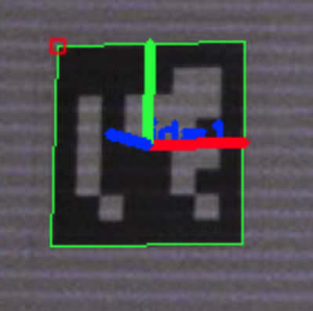

FAST-Calib-03 图像处理部分
本项目介绍
- FAST-Calib已经开源了代码，其基于ROS实现。为了方便使用，本项目将FAST-Calib的ROS依赖去除，可以直接在非ROS环境下进行编译使用，直接保存标定结果及各种可视化数据。方便各位在业务或者实验室项目中使用。
- 对FAST-Calib算法的各个步骤进行详细说明，介绍一些实际使用中可能遇到的问题。对论文中没有说明的步骤和要求进行补充。主要也是对自己学习FAST-Calib的一个总结。
- 希望能在FAST-Calib基础上，进一步优化算法，提高自动化。
在上一篇文章中，已经介绍了如何在激光雷达的点云中提取出标定板4个圆孔的中心点的3d坐标。本文将介绍如何通过ArUCo码检测，通过图像计算出标定板4个圆孔在相机坐标系下的3d坐标。
ArUco码检测
重新回顾我们的标定板，其上贴有4个ArUco码，如下图所示：

ArUco码是一些预定义的二维码图案，可以通过图像检测出4个角点，通过角点加上PnP算法估计出ArUco码的位姿。 通过标定板4个角落的ArUco码的位姿，我们可以计算出标定板在相机坐标系下的位姿。由于标定板的尺寸都是已知的，所以也可以直接计算出标定板四个圆孔中心点在相机坐标系下的3d坐标。
对于ArUco码的检测教程，可以参考这篇文章：ArUco码检测基本教程
这里有几个基础概念需要预先知悉：
- ArUco码的字典：ArUco码的字典提前定义好了一些ArUco码的图案，通过指定字典和id，就可以得到确定的一个ArUco码。
- 往上有些文章说通过ArUco码中数据位表示为二进制（比如这篇文章），可以计算的到id，但实际上，在OpenCV的aruco库中，并不严格遵循这种规则
One may think that the marker id is the number obtained from converting the binary codification to a decimal base number. However, this is not possible since for high marker sizes the number of bits is too high and managing such huge numbers is not practical. Instead, a marker id is simply the marker index within the dictionary it belongs to. For instance, the first 5 markers in a dictionary have the ids: 0, 1, 2, 3 and 4.
上面这段话来自OpenCV的官方文档：Detection of ArUco Markers
- 一个ArUco码可以估计这个码图案在相机坐标系下的位姿。码的中心点和坐标系的方向取决于怎么定义码的原点。可以将码的中心点定义为原点，也可以将码的某个角点定义为原点。同理，坐标系的方向也取决与预先定义的方式。
- 在OpenCV中，除了可以估计单个ArUco码的位姿，也可以对包含多个ArUco码的平面，同时利用多个ArUco码，更准确地估计出这个平面的位姿。
FAST-Calib中的ArUco码坐标系定义
在FAST-Calib中，ArUco码的坐标系定义如下：
- ArUco码的中心点为原点
- ArUco码的x轴指向码的右侧
- ArUco码的y轴指向码的上方
- ArUco码的z轴指向码的正面
所以，最后检测ArUco码的位姿，画到图像上呈现下面这种样子：

标定板的坐标系也是类似。
通过ArUco码检测估计标定板位姿
在FAST-Calib中，通过ArUco码检测估计标定板位姿的步骤如下：
- 设定ArUco码字典。FAST-Cablib中适应的字典类型是DICT_6x6_250，也就是6x6的ArUco码，一共有250个id。
- 调用cv::aruco::detectMarkers(image, dictionary, corners_output, ids, parameters)检测板子上的4个ArUco码。返回值corners_output是4个ArUco码的角点坐标，ids是4个ArUco码的id。
- 调用cv::aruco::estimatePoseSingleMarkers(corners_output, marker_size, cam_K, cam_distort, rvecs, tvecs)估计4个ArUco码的位姿。返回值rvecs和tvecs分别是4个ArUco码的旋转向量和平移向量。
- 计算四个位姿的平均值，得到标定板在相机坐标系下的初始位姿。
- 设置板子上4个ArUco码的id。（在FAST-Calib中，从左上角开始顺时针的id是：1，2，4，3） - boardIds
- 通过板子的尺寸，计算板子4个ArUco码的四个角点，在板子坐标系下的坐标。 - boardCorners
- 创建一个cv::aruco::Board对象，将boardCorners和boardIds传入。 - board
- 调用cv::aruco::estimatePoseBoard(corners_output, ids, board, cam_K, cam_distort, rvec, tvec)估计标定板在相机坐标系下的位姿。返回值rvec和tvec分别是标定板在相机坐标系下的旋转向量和平移向量。
- 计算4个圆孔中心在标定板坐标系下的坐标，通过估计出的标定板位姿，将4个圆孔中心在标定板坐标系下的坐标转换到相机坐标系下
- 额外的检查步骤：算法里还增加了一个正方形检查步骤，避免之前的步骤误检出其他标定板。但是从逻辑上看这部分似乎不太需要。
检测结果

上图中，标定板中间的坐标系是检测出的标定板位姿。4个角落的ArUco码检测结果也画出来。计算出的圆孔中心点通过投影之后也画了出来
总结
这部分实际上是一个很经典的通过ArUco码检测位姿的过程，并没有什么创新的部分。经过这部分的检测之后，我们就可以得到标定板的4个圆孔中心在相机坐标系下的3d坐标！！与上一篇，在点云数据上检测出来的圆孔中心点坐标，就可以进行后续步骤，通过3d匹配点对求解变换矩阵。